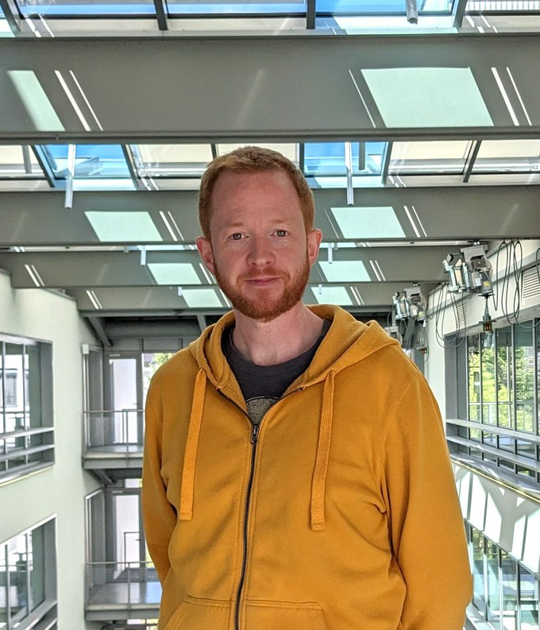
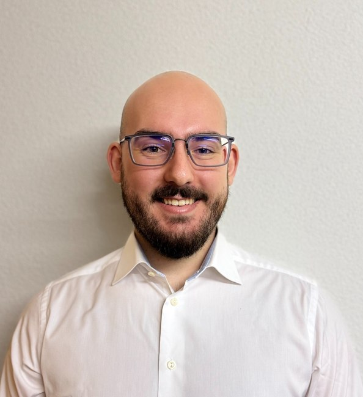

People
Paul Taylor
Principal investigator

I am a cognitive neuroscientist at the Department of Psychology, University of Zürich, where I am a Principal Investigator. I am also Oberassistent (Senior researcher) in the Biological Psychology unit chaired by Prof. Paul Sauseng. My research asks how attention, prediction and action influence visual perception and how these processes can be investigated through EEG and brain stimulation.
I studied Physiological Sciences at the University of Oxford, where I went on to complete graduate studies in Neuroscience and Experimental Psychology, including a PhD supervised by Kia Nobre and Matthew Rushworth. I subsequently worked as a postdoctoral researcher with Martin Eimer at Birkbeck and Vincent Walsh at UCL.
After moving to Munich in 2009, I held research and teaching appointments across psychology, medicine and philosophy at LMU, including an LMU Excellent Fellowship, a five-year BMBF-funded professorship (2015–2020) and an interim professorship in Experimental Psychology in 2024. In 2025 I moved to the University of Zürich.
This interdisciplinary background has shaped my interest in understanding perception and action using complementary experimental and analytical techniques.
Group members
Rahel Keller
I am currently doing my masters thesis in the Taylor Lab and will start my PhD here on an SNF-funded project in 2027.
Konstantin Rohe
I will start my masters thesis in 2027.
Roberto Castelli

I started as a Technical Assistant in 2026 where I am helping with running participants and analysing data using machine learning.
New postdoctoral fellow
To be announced — we are currently recruiting for a postdoctoral position. See the opportunity.
Alumni and former students
Postdoctoral fellows
- 2015–2020: James Dowsett
- 2019–2020: Fernando Cross
PhD students
- 2018–2023: Florian Obereisenbuchner
- 2015–2019: Lina Willacker
- 2015–2019: Angela Mastropasqua
- 2011–2015: Francesca Bocca
Incoming PhD supervision: Rahel Keller (planned 2027–2031).
Masters students
- 2023: Inez Martin Munoz
- 2022: Zane Wilkinson, Laura Hainke
- 2021: Selin Yilmaz
- 2020: Philipp Graff (Heidelberg University)
- 2019: Ainhoa Mongelos, Gizem Vural
- 2019: Jan Kappes
- 2017: Connor Spiech
- 2017: Mohamad Atayi (TUM Neuroengineering)
- 2016: Michaela McAssey
- 2015: Anna Fett
- 2014: Patrick Schwaferts
- 2013: Marian Sauter
- 2012: Kelsey Carlson
- 2011: Francesca Bocca, Anna Klapetek
Internships
- 2021: Giuilia Agosti
- 2019: Marco Roccato (University of Padua, Italy) – Erasmus
- 2015: Tomas Sverak (Masaryk University, Czech Republic) – Erasmus